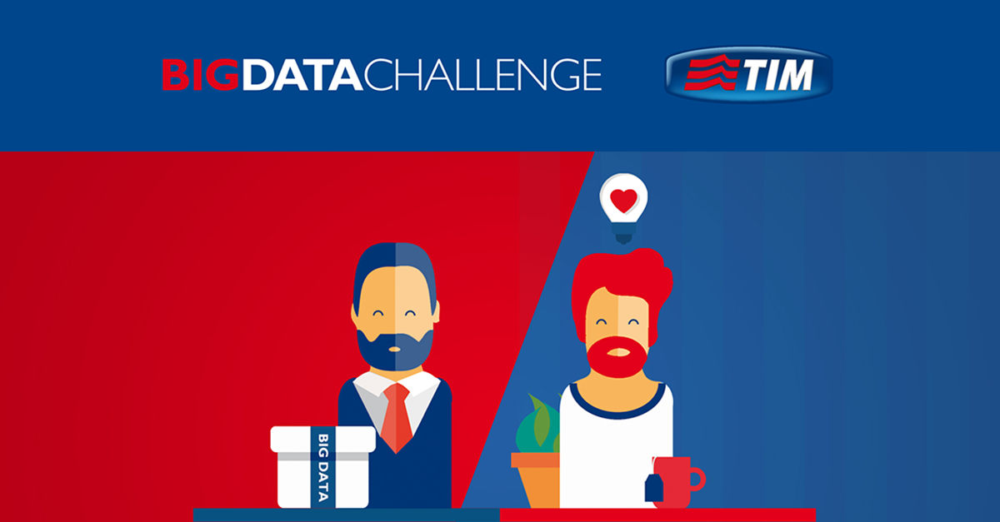

Innovations
The challenge for the 5G PPP is to secure Europe’s leadership in the particular areas where Europe is strong or
where there is potential for creating new markets such as smart cities, e-health, intelligent transport, education or entertainment & media. The
5G PPP initiative will reinforce the European industry to successfully compete on global markets and open new innovation opportunities.
How do you combat a hacker attack? And, above all, what damage can an attack cause for end users? We only need to think of the
sensitive data in our
smartphones to understand the impact it would have on our lives.
In recent years, the security risk scenario has dramatically changed. The activities of cybercriminals are continuously developing with regard to the extent of the phenomenon and the complexity of the attacks, which are gradually becoming more and more “refined”.

In recent years, the security risk scenario has dramatically changed. The activities of cybercriminals are continuously developing with regard to the extent of the phenomenon and the complexity of the attacks, which are gradually becoming more and more “refined”.
TIM Big Data Challenge is a contest aiming to stimulate innovation, starting from a Big Data package.
Are you an enthusiast or expert? Or do you simply relish a challenge? This is the contest for you! Professionals, researchers and enthusiasts from all over
the world rise to the Big Data challenge, developing projects for our future.